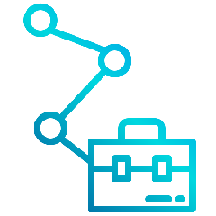

Experiência Profissional
Olá! Aqui você irá encontrar um pouco da minha experiência profissional, como iniciei minhas jornadas pelas empresas, e como foi minha trajetória por onde passei.
Olá! Aqui você irá encontrar um pouco da minha experiência profissional, como iniciei minhas jornadas pelas empresas, e como foi minha trajetória por onde passei.
Desde minhas primeiras versões, meu pai sempre me orientou a aprender "de tudo um pouco", seja para uso SaaS (Serviço/Profissional) ou On-Primesse (Em casa/Pessoal), então antes mesmo de iniciar minha carreira profissional na área de T.I. realizei alguns trabalhos bem distintos, por exemplo auxiliando meu pai sempre que iria fazer algum trabalho de pedreiro, encanador ou mesmo elétrica residencial.
Quando na minha versão 14.0 nenhuma empresa me contrataria devido a idade, mas para aquisição de meus brinquedos tecnológicos, necessitava adquirir recursos, e diferente do mundo dos games como em Age of empires onde se encontra ouro por toda parte, ou GTA em que você consegue dinheiro fazendo tudo que há de errado para se fazer. Na vida real é necessário trabalhar, então consegui um emprego de "Homem Seta" no qual passava o final de semana vestido de preto, com uma luva vermelha de malha que ia até o cotovelo em apenas um dos braços ao incrível estilo "mamãeeeee olha eu aqui!", e uma seta gigante no pescoço, por incrível que pareça era muito maior do que essas correntes que os funkeiros usam hoje para ficar ostentando, com esse aparato todo, minha função englobava passar o dia gesticulando e fazendo mímicas para os veículos que passavam pelas vias onde estávamos fixados, sempre chamando a atenção e indicando o caminho para os pontos de venda de apartamentos da construtora contratante.
Trabalhar é como jogar online, não dá para simplesmente pausar e voltar depois, é tudo realtime. É necessário encarar sol, chuva, e principalmente ser criativo, rolava de tudo um pouco, pular feito um chimpanzé, fazer dancinha do Elvis ou até mesmo um Moonwalker, tudo para chamar a atenção dos motoristas e indicar o caminho do estande de vendas da construtora, e fazendo seu trabalho no sábado e no domingo, você garantia inacreditáveis R$ 50,00 por final de semana.
Uma pequena observação: Caso fosse no sábado e falta-se no domingo, seria o mesmo que passar 4 mundos do Super Mario, e esquecer de salvar no memory card, você não ganhava nada, e se não fosse no sábado, não precisava ir no domingo, pois estava automaticamente desclassificado para trabalhar. Na semana seguinte poderia apenas ficar de reserva, e caso alguém faltasse você trabalharia, caso contrário deveria voltar para casa sem receber nem mesmo o valor do transporte.
Passado essa fase e terminando o colegial, passei a trabalhar com meu pai e meu tio na marcenaria, 44 horas semanais, não registrado, onde receberia R$ 200,00 por semana, muito melhor doque o emprego de animadora de torcida, ops de homem seta. Não fiquei por muito tempo, pois ao final do primeiro mês, um amigo me indicou para minha primeira colocação em uma vaga na área de Tecnologia.
Sabe aquele jogo/filme que você está aguaradndo o lançamento a anos e finalmente chega o dia? Foi assim que me senti quando comecei. Sem restart e sem cheats, e onde iria obter muita experiência na área de infraestrutura.
Fase 1 - O Newbie da turma: A princípio prestava suporte aos usuários com dificuldade no Windows, no Office, mandar imprimir um documento e uso geral dos computadores. Quando não estava atendendo a um chamado, estava buscando novas maneira de otimizar o desempenho das máquinas com os recursos limitados que tínhamos.
Fase 2 - Agregando o suporte N1 de Sistemas: Depois de ganhar muitos XP em suporte, passei a auxiliar a equipe responsável pelo sistema ERP utilizado na universidade, o Corpore RM da RM Sistemas que acabou sendo adquirida pela TOTVS, um sistema voltado para gestão de ambientes educacionais. Realizava o atendimento primário, verificando se os erros apresentados eram de fato do sistema ou algo pontual no computador do usuário, também realizava o cadastro e gerenciamento de acesso dos usuários aos módulos e auxiliva com um breve treinamento introdutório do sistema.
Fase 3 - Manuteção de Impressoras: Além das funções habituais, realizava o suporte e manuteção primária as impressoras, que eram da empresa Simpress, especialista em outsource de impressões com impressoras Ricoh. Além de realizar mensalmente a coleta e envio dos contadores de impressão de cada impressora e gerenciamento dos tonners.
Com o mesmo tempo que demoraria para finalizar download de 180MB em uma conexão de 56kbps, algo em torno de dois anos e meio (E se está pensando, mas dava para ser mais rápido, considere as quedas de energia, e erros quando o download chegava em 99%). O turno da noite era composto por eu e um menor aprendiz, e após as 18 horas eu passava a ser o responsável por toda a área de T.I. realizando o atendimento de Suporte Técnico, Sistemas e Rede.
Foi então que surgiu uma oportunidade para ingressar na equipe, imediatamente solicitei uma oportunidade ao Administrador de Redes e o Gerente de T.I., que atenderam meu pedido, e com essa alteração de percurso, poderia me dedicar mais expecificamente a uma área e também poderia cursar uma graduação em tecnologia, já que o horário da equipe era o horário comercial.
Mesmo sendo menbro da equipe de redes, ainda auxiliava os colegas da equipe de suporte, exercendo a função de Suporte Nível 3, enquanto auxiliava também o administrador de rede com os servidores, e que não eram poucos, dentre os muitos tinhamos:
Firewall: Trabalhavamos com dois sistemas, um com sistema Linux gratuito chamado IPCop. Nesse criávamos as regras primárias, controle de banda e acesso externo. No ISA Server da Microsoft realizávamos as regras internas da rede e as regras secundárias de acesso a internet.
Active Directory: Neste eram realizados o controle de acesso dos usuários, através de regras criadas no AD conhecidas como GPOs, podiamos definir em quais computadores os usuários poderia logar, quais alterações poderia fazer ou não, tais como personalizar área de trabalho, instalar/desintalar programas, quais os caminhos de rede e impressoras teriam permissões de utilziar.
DHCP, DNS, WINS: Com a distribuição gerenciada de endereços IP, sabiamos exatamente quais eram as máquinas que acessavam a rede da Universidade, quais pertenciam a universidade e quais eram particulares de professores e funcionários e quais eram de alunos, também bloqueavamos o acesso de máquinas não conhecida, não permitindo o acesso a rede interna e limitando o acesso a internet.
Arquivos: Sabe quando Deus disse: "Noé, faça o backup que vou formatar!", era mais ou menos assim que explicávamos para o usuário a importancia de utilizar as pastas em rede, pois tinhamos um servidor de arquivo onde poderiamos realizar os backups e gerenciar arquivos não autorizados, como vídeos e fotos particulares. Caso tivesse algum problema no computador e o mesmo precisasse ser formatado ou ainda que por algum motivo o pc queimasse, ele poderia facilmente continuar trabalhando em qualquer computador na rede. Além de que os usuários tinham maior facilidade de compartilhar documentos com sua equipe, ou membros de outros departamentos, além é claro da seguraça e monitoria de acesso/edição.
Impressão: Esse servidor funcionava como um centro de controle das impressoras, além de facilitar a instalação e compartilhamento, ainda nos permitia verificar quem estava realizando impressões indevidas. A princípio utilizavamos o basico do Windows, posteriomente foi implantando um sistema mais profissional de gerenciamento de impressão.
Thin Cliente e Terminal Services: Já assistiu algum filme de zumbi? Qualquer um, pois todos tem basicamente a mesma lógica, morto ou infectados por algum vírus que os tornam praticamente corpos com as funções básica do curpo, na universidade tinhamos algo similar. A universidade possuía dois laboratórios com aproximadamente 45 "computadores" cada, na verdade eram máquina como Pentium 386, 486 com 128MB, 256MB de memória RAM e sem HD. Não, você não leu errado, eram máquinas totalmente obsoletas e sem HD, o mais incrível, é que rodavam sistemas como Office, CorelDraw, Photoshop, 3D Max entre outros.
Graças a um sistema chamado de Thin Client ou Terminal Burro, essas máquinas possuíam uma placa de rede com uma EPROM que buscava o boot em um servidor, que iniciava uma instância de usuário no Terminal Services, que este é quem tinha instalado o Windows, todos os softwares, e quem realmente realizava o processamento.
Além de comportar a manutenção e gerencialmento dos servidores, também tinhamos de gerenciar e prestar suporte a parte de wifi, cabeamento e parte da telefonia.
E com grandes upgrades, grandes recursos são necessários. Terminando a minha gradução, estava na hora que melhorar meu salário, e foi então que migrei da Universidade para uma empresa chamada Shark Tratores, uma concecionária de tratores e implementos agrícolas, e mais tarde entendi que era apenas uma, das sete empresas do Grupo Shark, que possuia ao total 7 empresas com filiais distribuidas em toda a região sul, suldeste e parte do centro-oeste.
A princípio, vendo do ponto profissional, parecia mais um downgrade do que upgrade, voltando ao suporte de impressoras, ususários e etc. Mas a remuneração era basicamente o dobro do que recebia anteriormente, com o passar dos dias descobri que o trabalho também seria dobrado, basicamente englobava todas as atividades que cumpria anteriormente na equipe de suporte e de redes.
Agora as responsabilidades iriam desde trocar um mouse, até mesmo preparar, montar e equipar um filial inteira, além de encontrar forma de otimizar e melhorar o ambiente e comunicação com as filiais. Implantação de novos sistemas para gerenciamento da rede e usuários e um ambiente de chamados.
Enquanto parte da equipe de suporte, fui designado para realizar a substituição do sistema proprietário dos BluePex UTM, pelo sistema free chamado PFSense.
Iniciando pelas filiais de São Paulo, me deslocava até as filiais para realizar a formatação, instalação e configuração do sistema nos equipamentos, para que podesse ser feito o gerenciamento de acesso a internet e "fechamento" da VPN com a matriz. Após finalizar as filiais do Estado, continuei o projeto com as demais filiais, que por motivos econômicos, eu deveria realizar a migração de forma "remota", uma vez que enviava um CD com o sistema, ou preparava um pendrive que houvesse na filial, acessando remotamente o computador de um colaborador da filial, e através de ligação e um manual préviamente enviado para o mesmo, realizava essa migração de sistemas.
Com esse projeto finalizado, foi hora de partir para um novo projeto, dessa vez tentando conscientizar os usuários, da importancia de realizar a abertura de chamados através do sistemas que estavamos implantando, uma ferramenta também gratuita chamada GLPI.
Até esse momento cada unidade de negócio (empresa) do grupo possuia um departamento individual de suporte, mas por motivos diversos, foi realizado a unificação dos departamentos, e assim deveriamos atender a todas as empresas do grupo, oque acarretou o aumento exponencial na demanda de chamados, e uma reestruturação nas funções e atividades.
Além dos sistemas em clipper, também passamos a dar suporte primário aos novo ERP que estava sendo implantado nas empresas do grupo, o sistema Protheus da TOTVS. Quando detectado que o problema estava no sistema e não no processo ou algo pontual na máquina, faziamos a "ponte" entre o usuário e o analista de sistema responsável pelo módulo em questão.
Durante um tempo foi interessante e irrequecedor do ponto de vista de conhecimento, mas após um tempo passou a ser algo muito rotineiro. E após um pouco mais de 3 anos, recebi uma proposta extremamente interessante. A oportunidade de mudar radicamente a minha caminhada profissional.
Graças ao meu engajamento e preocupação em realizar sempre o melhor atendimento, minha educação e boa comunicação. Ao menos nas palavras do meu então futuro coordenador, me garantiu uma proposta de migrar da equipe de Suporte Técnico para a equipe de Sistemas Corporativos.
Por não ter experiência com desenvolvimento de sistemas, minhas atividades iniciais seriam, atualizar e criar manuais dos sistemas pelo qual o departamento era responsável, e quando necessário realizar pequenas manuteções e alterações no sistema com a supervisão de um analista mais experiênte.
Depois de alguns meses, já com os manuais de intranet e QlikView finalizados, me foi incubido ministrar um treinamento individual via telefone e acesso remoto, com os gestores dos 4 departamentos base de todas as filiais do grupo (Comercial, Oficina e Administrativo, Gerencia), esse treinamento seria para orientar sobre a plataforma de B.I. que já estava implantada no grupo a anos, porém com pouca utilização, e sobre os recursos disponíveis na intranet.
Com mais esse projeto de treinamento finalizado, um novo desafio estava surgindo, a implantação de um sistema CRM. Mas implantar um CRM não apenas comprar um software de prateleira, instalar e passar o usuário e senha para os usuários, implantar um CRM existe uma mudança radical no DNA da empresa, na cultura dos colaboradores.
A princípio cogitou-se o desenvolvimento interno do CRM, mas a diretoria achou que não seria viável, que seria melhor "comprar um sistema de terceiros já pronto", e assim iniciou a jornada nas estrelas para encontrar uma empresa com um sistema voltado a concessionária e agronegócio, ou que pelo menos fosse de fácil customização para atender as necessidades do grupo.
Passado algum tempo, conseguimos encontrar uma empresa que já possuia um know-how em CRM e Agronegócio, e estava totalmente disposta a realizar a customização em parceria com o Grupo Shark, assim eles poderiam obter mais conhecimento para área de Concecionária e nos proporcionaria um sistema mais próximo do que era esperado. Além de atender um requisito extremamente importante, atender aos vendedores que estavam no meio do campo, e não possuiam nenhum tipo de conexão.
Com o CRM já na fila de processamento, teriamos de nos preocupar agora com mais duas tarefas agendadas, sendo a tarefa um, o dispositivo que o vendedor iria utilizar em campo, tarefa dois segurança e gerenciamento desses equipamentos.
Partimos então para a aquisição dos equipamentos, após avaliação com outros clientes da Datacoper que já utilizava o então Cooperate CRM, ficou estabelecido que a melhor utilização para os nosso usuários seria um tablet samsung de 7".
Com mais uma tarefa concluida, foi hora de encontrar um sistema de gerenciamento dos tablets, após uma pesquisa de mercado, encontramos a empresa MDM Solutions que representavam diversos sistemas do segmento de gerenciamento de dispositivos moveis. Após avaliação e testes, concluímos que o sistema mais aderente naquele momento seria o SOTI Mobi Control.
Com os sistema CRM já sendo integrado parcialmente com nosso sistema ERP, tablets comprados e sistema de MDM definido, era hora da fase mais complexa, a implantação e treinamento.
Foram meses de muita correria, pois a configuração inicial dos equipamentos era algo padrão, porem, a cada entrega que iriamos realizar, necessitávamos configurar individualmente os tablets, pois precisavamos criar os acessos do vendedor, solicitar que o gerente deste vendedor atribui-se os clientes a carteira do vendedor, em seguida tinhamos de carregar a base de dados no tablet, além de cadastrar a atribuir o equipamento ao vendedor em nosso sistema de controle interno.
Depois de realizar a configuração, cadastro e atribuições do equipamento para o vendedor, e juntamente com o pessoal do administrativo de cada filial gerar os termos de uso do equipamento, era hora de carregar o carro e partir para as filiais que iriam receber o table.
Com tudo configurado, conectado, preparado, é hora de dar play. O ritual de era composto por entregar o equipamento ao vendedor e assinatura do termo de uso do equipamento, e um treinamento de 3 dias, onde no primeiro dia era passado aos vendedores todas as informações o tablet, forma de uso, sistemas ponibilizados no equipamento, e uma pequena introdução ao CRM, nos dois dias seguintes, realizavamos o treinamento não só do sistema CRM, mas como também a cultura CRM, mostrando as vantagens de se ter uma plataforma para centralizar e compartilhar as informações e contatos com o cliente, e acabando com alguns mitos que rondavam em volta da implantação desse novo sistema.
Em sequência, também era realizado um treinamento com o gerente da filial e/ou gerente comercial, no qual teriam acesso somente na plataforma web, por serem voltada aos gestores e disponibilizar mais recursos do que a versão mobile.
Com a experiência adquirida durante anos no seguimento, a MDM Solutions lançou um sistema próprio, que se destacava em vários pontos, dentre eles o valor cobrado com base no real e não no dólar como os demais sistemas, por se tratar de desenvolvimento próprio, o tempo de resposta em caso de problemas ou dúvidas muito menor, e recursos realmente funcionais. O Pulsus foi pensado para ser um sistema muito enxuto, porém extremamente eficaz e eficiente agregando valor real a seus clientes.
Ao termino do contrato com o SOTI Mobi Control, iniciamos imediatamente a migração para o sistema PULSUS, que demostrou efetividade logo na migração, nos permitindo realizar de forma automatizada e gradual a migração do sistema nos equipamentos, assim causando o mínimo de impacto para os usuários, e requisitando uma demanda mínima na mão de obra e suporte.
Desde quando entrei para a equipe de Sistemas Corporativos, prestava suporte e treinamento em QlikView, e com o passar do tempo passei a dar manutenção nos dashboards já criados, implementação de novos relatórios, gráficos e análises, além de disponibilizar novos aplicativos, agendar atualizações, entre outras configurações no QMC.
Então foi chegado o momento de uma atualização no cargo oficial, já que na prática havia muito tempo que realizava as funções de um Analista de BI, além de ter concluído a Pós Graduação em BI. Por esse motivo me distanciei um pouco de minhas atribuições anteriores e foquei mais nas funções de BI.
Agora o foco e a rotina eram reuniões para levantamento de necessidade, verificação de dados, tratamento, carga, calculos e criação de relatórios e gráficos, e tudo com base nas análises que os clientes haviam solicitados
E a vida é uma caixinha de surpresa, e por nepotismo, colocaram o estagiário para ser o novo Gerente de TI, que por sua vez começou a replicar a ação e logo os clusters começaram a apresentar falhas e ficar inoperantes, erros de gravação e leitura dos setores e então... Após anos operando continuamente, era hora de uma pausa, executar uma desfragmentação no disco, repensar o projeto e reiniciar em um novo emprego.
Um dia após solicitar meu desligamento na Shark, fui convidado para integrar a equipe de consultores da BI4all. Inicialmente declinei da proposta, pois havia feito alguns cursos, mas não tinha experiência nenhuma prévia com Power BI, a plataforma mais utilizada pelos contratantes da consultoria, mas após algumas conversas, aceitei o convite.
E depois de me atualizar com alguns cursos, online e presencial, comecei minhas atividades criando algumas POC que estavam pendentes de serem entregues. Em seguida comecei a visitar alguns clientes e acompanhar alguns projetos com o Consultor Senior, e antes que percebe-se já estava realizando a consultoria sozinho. Em alguns momentos, realizava o acompanhamento como auxliar durante os treinamentos que eram ministrados por um analista senior.
Permaneci por um breve período, mas após prestar consultorias para inúmeras empresas de renome, obtive uma curva de experiência e conhecimento muito elevada.
Depois dessa experiência, precisava dar continuidade em alguns projetos pessoais, além de resolver alguns assuntos de família, e por ter finalizado os projetos que estavam em andamento, era o momento certo de me desligar dessa empresa também!